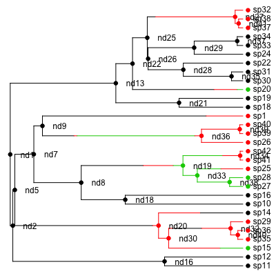
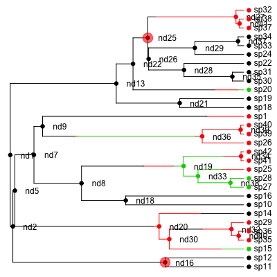

make.musse.split(tree, states, k, nodes, split.t, sampling.f=NULL, strict=TRUE, control=list())
ape “phylo” format.k. This vector must have names that
correspond to the tip labels in the phylogenetic tree
(tree$tip.label). For tips corresponding to unresolved
clades, the state should be NA.nodes (see
Details).k where sampling.f[i]
is the proportion of species in state i that are present in
the phylogeny. A value of c(0.5, 0.75, 1) means that half of
species in state 1, three quarters of species in state 2, and all
species in state 3 are included in the phylogeny. By default all
species are assumed to be knownstates vector is always checked to make sure
that the values are integers on 1:k. If strict is
TRUE (the default), then the additional check is made that
every state is present. The likelihood models tend to be
poorly behaved where states are missing, but there are cases
(missing intermediate states for meristic characters) where allowing
such models may be useful.make.bisse.Create a likelihood function for a MuSSE model where the tree is partitioned into regions with different parameters.
Branching times can be controlled with the split.t
argument. If this is Inf, split at the base of the branch (as in
MEDUSA). If 0, split at the top (closest to the present, as in
the new option for MEDUSA). If 0 < split.t < Inf then we split
at that time on the tree (zero is the present, with time growing
backwards).
## This example picks up from the tree used in the ?make.musse example. ## First, simulate the tree: set.seed(2) pars <- c(.1, .15, .2, # lambda 1, 2, 3 .03, .045, .06, # mu 1, 2, 3 .05, 0, # q12, q13 .05, .05, # q21, q23 0, .05) # q31, q32 phy <- tree.musse(pars, 30, x0=1) ## Here is the phylogeny, with true character history superposed: h <- history.from.sim.discrete(phy, 1:3) plot(h, phy, show.node.label=TRUE, font=1, cex=.75, no.margin=TRUE)
## Here is a plain MuSSE function for later comparison: lik.m <- make.musse(phy, phy$tip.state, 3) lik.m(pars) # -110.8364[1] -110.8364## Split this phylogeny at three points: nd16 and nd25, splitting it ## into three chunks nodes <- c("nd16", "nd25") nodelabels(node=match(nodes, phy$node.label) + length(phy$tip.label), pch=19, cex=2, col="#FF000099")
## To make a split BiSSE function, pass the node locations and times ## in. Here, we'll use 'Inf' as the split time to mimick MEDUSA's ## behaviour of placing the split at the base of the branch subtended by ## a node. lik.s <- make.musse.split(phy, phy$tip.state, 3, nodes, split.t=Inf) ## The parameters must be a list of the same length as the number of ## partitions. Partition '1' is the root partition, and partition i is ## the partition rooted at the node[i-1]: argnames(lik.s)[1] "lambda1.1" "lambda2.1" "lambda3.1" "mu1.1" "mu2.1" "mu3.1" [7] "q12.1" "q13.1" "q21.1" "q23.1" "q31.1" "q32.1" [13] "lambda1.2" "lambda2.2" "lambda3.2" "mu1.2" "mu2.2" "mu3.2" [19] "q12.2" "q13.2" "q21.2" "q23.2" "q31.2" "q32.2" [25] "lambda1.3" "lambda2.3" "lambda3.3" "mu1.3" "mu2.3" "mu3.3" [31] "q12.3" "q13.3" "q21.3" "q23.3" "q31.3" "q32.3"## Because we have two nodes, there are three sets of parameters. ## Replicate the original list to get a starting point for the analysis: pars.s <- rep(pars, 3) names(pars.s) <- argnames(lik.s) lik.s(pars.s) # -110.8364[1] -110.8364## This is basically identical (to acceptable tolerance) to the plain ## MuSSE version: lik.s(pars.s) - lik.m(pars)[1] -1.982002e-09## The resulting likelihood function can be used in ML analyses with ## find.mle. However, because of the large number of parameters, this ## may take some time (especially with as few species as there are in ## this tree - getting convergence in a reasonable number of iterations ## is difficult). ## <strong>Not run</strong>: # fit.s <- find.mle(lik.s, pars.s, control=list(maxit=20000)) # ## <strong>End(Not run)</strong> ## Bayesian analysis also works, using the mcmc function. Given the ## large number of parameters, priors will be essential, as there will ## be no signal for several parameters. Here, I am using an exponential ## distribution with a mean of twice the state-independent ## diversification rate. ## <strong>Not run</strong>: # prior <- make.prior.exponential(1/(-2*diff(starting.point.bd(phy)))) # samples <- mcmc(lik.s, pars.s, 100, prior=prior, w=1, print.every=10) # ## <strong>End(Not run)</strong>